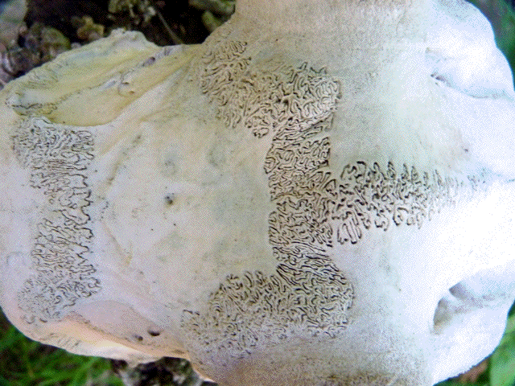
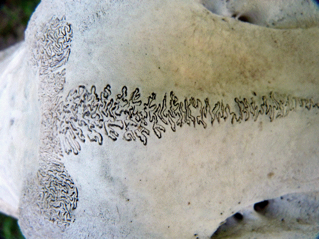
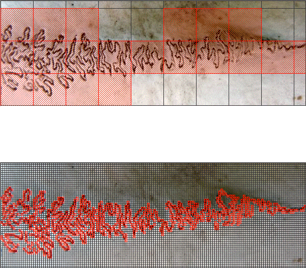
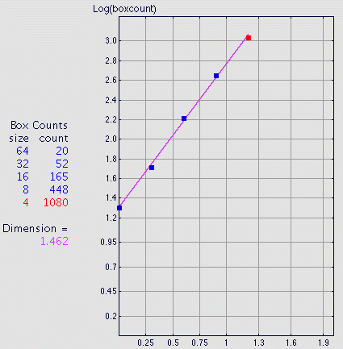

| Here we see two pictures of a deer skull suture, photos by Donna Laine. |
|  |
|  |
| To estimate the box-counting dimension of part of the suture, we cover the image
with a collection of boxes, each smaller box has |
| Pictured here are the largest and smallest boxes. Certainly, smaller boxes pick up more detail than larger. The dimension measures this increase, under the assumption - validated if in a log-log plot the data points lie nearly on a straight line - that this increase is according to a power law. |
|  |
| The points do appear to lie close to a straight line. The slope of this line approximates the dimension of the suture. |
|  |
Return to Box-Counting Dimension.